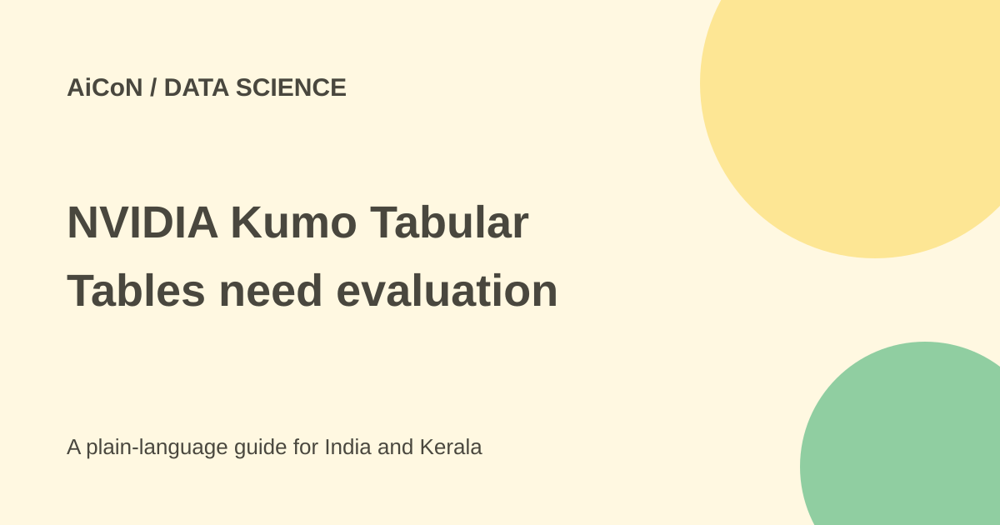

NVIDIA Kumo Tabular: table prediction and costs
NVIDIA Kumo Tabular is a pretrained model for classification and regression on tables. You provide labelled examples as context and ask it to predict new rows. It is a developer model, not a point-and-click spreadsheet app.

Classification and regression
Classification predicts a category or its probability, such as an invented label in a sample dataset. Regression predicts a numerical value. The official example uses known target values as context and obtains class probabilities for new rows.
Pretrained means the model was trained before your particular task. It does not mean you can skip data preparation, evaluation or careful separation of known and unknown answers.
What hardware does it need?
The official usage example places both table tensors and the model on CUDA. The linked structured-data-models library is GPU-native and currently lists Python 3.11 and PyTorch 2.7 or later.
Do not assume a free download will run comfortably on an ordinary office laptop. Check the exact model variant, memory and dependencies before buying or renting hardware.
How to evaluate a table
- Read the official model card and linked library requirements.
- Review the weight licence and code licence separately.
- Use a public dataset or invented rows with no personal information.
- Create a separate Python environment and confirm suitable hardware.
- Keep labelled context rows separate from a held-out test set.
- Specify column types and the target correctly using the official example.
- Compare predictions with simple baselines and inspect errors across groups.
- Measure runtime, memory and total cost before using real business data.
Avoid leaking the answer
If the target or a disguised copy appears in the input, a benchmark can look excellent without measuring useful prediction. Keep time-related datasets split appropriately and make sure information from the future does not appear in training context.
Do not use a table model alone for decisions about loans, hiring, medical care or other consequential outcomes. Poor or biased data can produce harmful predictions even when an overall score looks good.
Free or paid?
The model card says weights use OpenMDW 1.1. The library says NVIDIA-authored code uses Apache 2.0, with separate terms for some components. A code licence does not override the weight licence.
Compute, storage, cloud GPUs and engineering cost money. No standard INR inference price or free hosted endpoint is established. The fetched Hugging Face card says it is not deployed by an inference provider on that platform. NVIDIA also documents a NIM deployment route with separate container terms; that does not establish a free hosted endpoint.
For Indian teams
Test on data representing your users and processes. Do not send a spreadsheet containing Aadhaar numbers, bank details or health records to a public experiment. Check organisational permission and hosting before using customer data.
NVIDIA's current model documentation confirms three variants: about 28M, 62M and 215M parameters, pretrained on synthetic tables. The published performance figures remain the vendor's evaluations. This guide does not repeat an unverified winner claim.
What changed since the original post?
We added current Python/PyTorch requirements and separate code-versus-weight licensing. The three sizes are confirmed in NVIDIA documentation, while the ranking-first claim is not treated as an independently tested fact. No model was downloaded or benchmark run.
Frequently asked questions
Can I click a cell to run it?
The official route is Python code, not a consumer spreadsheet interface.
Does pretrained mean no labels are needed?
The example provides labelled context rows.
Are code and weights licensed the same way?
No. Read each set of terms.
Sources: Official NVIDIA model card · NVIDIA library and requirements · Current NVIDIA model documentation. Checked 7 October 2026.